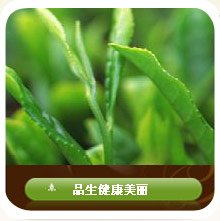
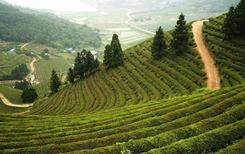

联系我们
地址：云南昆明市官渡区东郊路117号
邮编：650041
电话：400-648-5980
Email:cnkingnuo@gmail.com

公司简介
云南昆明德利华茶保健品有限公司是一家集茶叶生产基地、保健茶加工和销售为一体的综合型企业，下属茶叶精制加工厂三家，无污染高山茶园3000亩，有机茶园1100余亩。
该茶园严格按照国际有机农业运动联合会（INFOAM）的技术规范进行茶园管理，并在茶园加工、包装、储运过程中和其它非有机茶严格区分，防止了任何形式的污染。并经国际有机食品认证机构IMO检验颁证，现已形成红茶、绿茶、普洱茶三个系列，10多个品种的有机茶及保健茶类，目前主销德国、法国、加拿大等欧美国家。
云南昆明德利华茶保健品有限公司属下茶厂、茶园均位于云南茶叶主产区-----云南省临沧地区沧源县、双江县，该地区所产茶叶品质优良。近年来对有机茶系列产品的开发在国内也属领先，所开发的有机茶系列产品更是受到国外市场的欢迎。
